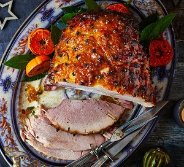

Stem ginger & mustard glazed ham

Description
The ginger in this recipe is almost toffee-like, the meat stays juicy and the clementines add a pop of colour
Ingredients
- 5kg boneless gammon joint (smoked or unsmoked depending on your preference)
- 2l ginger beer
- 1 onion, quartered
- 2 clementines or satsumas, halved horizontally, plus a few to decorate the plate, if you like
- 20 cloves
- 3 bay leaves, plus a few to decorate the plate, if you like
- 2 tbsp English mustard
- 4 tbsp ginger syrup, plus 3-4 balls stem ginger from the same jar, thinly sliced
Steps
- Put the gammon in a deep saucepan (if tied, leave it as is). Pour over the ginger beer and add the onion, clementine halves, 5 cloves and 3 bay leaves. Top up the saucepan with enough water to just cover the gammon. Bring to a gentle bubble, cover with foil and cook for 2 hrs, topping up with more water while cooking if you need to.
- Remove the ham from its cooking liquid using large tongs and leave to cool for 10 mins until cool enough to handle.
- Heat oven to 200C/180C fan/gas 6. Carefully cut off the rind, leaving a thin layer of fat on the ham. Score a diamond pattern all over the fat. Put the gammon in a roasting tin. Mix the mustard and ginger syrup, then paint about half of the mixture over the ham. Stuff the stem ginger slices into the crevices of the scored fat and stud with the remaining cloves.
- Bake for 20 mins, then paint with the remaining glaze. Bake for 1 hr more until burnished and bronzed. Cover with foil during cooking if the glaze starts to catch. Cut some clementines into thick slices and roast them while you glaze the ham, then use to decorate the plate, if you like. Serve the ham warm or cold. Will keep in the fridge for five days.